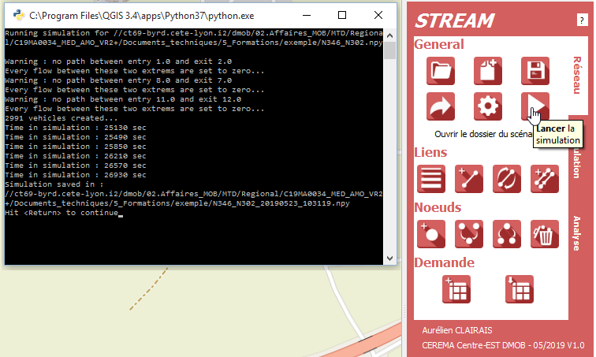

QStream : Extension QGis pour Stream
Documentation technique Version 0.1
ATTENTION : La version actuelle de la documentation n'est pas définitive. Elle peut être incomplète où présenter des erreurs. Merci de nous faire part de vos suggestions.
Introduction
- Nom : QStream - Interface QGis pour Stream
- Version : v 0.0.3
- Auteurs : Aurélien CLAIRAIS, Etienne HANS
- Service : CEREMA Centre-Est
- Contact : aurelien.clairais@cerema.fr
Stream est une plateforme de simulation mésoscopique du trafic. Développée initaliement sur MatLab, puis reprise entierrement en Python, elle se dote aujourd'hui d'une plateforme de conception de scénarios. Ainsi, QStream est une extension de QGis permettant la création de scénarios pour Stream. Les fonctionnalitées de QGis permettent la création du réseau (liens, noeuds), le paramétrage des scénarios (offre, demande), l'ajout de régulations. L'interface avec Stream permet la simulation du scénario et l'analyse des résultats.
Cette documentation présente les fonctionnalitées de QStream et propose de guider l'utilisateur dans le but de mener à bien une simulation mésoscopique du trafic. L'utilisation de l'outils ne nécessite aucun pré-requis particulier en termes de compétences. En effet, l'ensemble des démarches présentées sont détaillées dans un but d'accessibilité au plus grand nombre. En cas d'incompréhension, la dernière partie regroupe des questions diverses. Sinon, contacter ...
Pré-requis
Afin de pouvoir utiliser correctement QStream vous devez disposer de :
Lancement
Ouvrir QGis 3.4. Inastaller le plugin si nécessaire depuis un fichier ".zip" fourni.

Ouvrir le module Qstream.
Activer les options d'accrochage :
Projet > Options d'accrochage > Activer les options - mètres > Fermer
Démarrage d'un nouveau réseau
Importer le fond de plan OpenStreetMap.
Zoomer sur la partie de la carte où se trouve le réseau d'intérêt.
Cliquer sur l'icône de création d'un nouveau projet.
Créer un nouveau dossier > Donner le nom de votre réseau > Enregistrer.
Paramétrage du réseau
Cliquer sur l'icône de modification des propriétés des liens.
Ajouter un type de route, par exemple un type "Bretelle".
Proposer des valeurs par défaut pour ce nouveau type.
Modifier type > valider les changements globaux.
Cliquer sur l'icône d'enregistrement des modifications.
Edition de la géométrie des liens.
Cliquer sur l'icône d'ajout de lien.
Editer un lien en cliquant sur la carte : des clics gauches pour faire une polyligne, un clic droit pour terminer l'édition.
Il est possible de compléter les attributs soit une fois le lien édité (possible mais long), soit plus tard (conseillé).
Une fois tous les liens édités, cliquer sur l'icône d'enregistrement des modifications

Edition des paramètres des liens
Cliquer sur la couche "Liens".
Si besoin, la basculer en mode édition.
Ouvrir la table des attributs.
Création des noeuds
Cliquer sur l'icône de création des noeuds
Basculer les noeuds en mode édition
Cliquer sur l'icone "identifier les entités" (ou ctrl+Maj+J)
Cliquer sur les noeuds, en particulier d'entrée et sortie > modifier leurs "name".
Modifier les paramètres généraux (icône 2:2)
Conserver le paramètre ActiveUpstreamCapacity désactivé.
Choisir l'emplacement des codes Stream ("Stream_Vx.x.x" et non le sous-dossier "stream")
Cliquer sur "ok"
Les types de vehicules doivent toujours être identifiés à partir de 0 et sans saut dans leurs identifiants
Ouvrir la table VehicleTypes
Ajouter au besoin un type de véhicule
Gestion de la demande
Cliquer sur Générer une demande.
Ouvrir le dossier du scénario.
Renommer le tableur OD_matrix.ods
Ouvrir le tableur nom_OD_matrix.ods de la demande avec LibreOffice (pas Excel).
Remplir le tableur : des entiers, en véhicules par heure (référence : capacité environ 2000 veh/h par voie).
Remplir toutes les cases.
Enregistrer le tableur.
Cliquer dans Qgis sur Importer la matrice.
Simulation et Analyse
Lancer la simulation (icône 2:3).

Aller dans le menu Analyse.
Afficher le réseau.
Cliquer sur la couche des Liens, et en sélectionner, pour voir les temps de parcours par lien.
Cliquer sur la couche des noeuds, et en sélectionner, pour voir les temps de parcours par itinéraire.
"Générer des fichiers XT".
Cliquer sur la couche des Liens, et en sélectionner, pour voir les diagrammes espace temps.
Cliquer sur "Traficolor" pour le traficolor dynamique.
Cette section regroupe des questions diverses référencées ou non dans les autres parties.
Installer un package python tier
Certaines fonctionnalitées de QStream nécessite l'installation de package tiers. En l'absence de moyen pour installer automatiquement ces packages, il faut installer ces packages via pip. Les étapes sont les suivantes :
- Localiser et lancer le batch d'OSGeo4W ;
- Activer les chemins d'accès de Python 3 et Qt5 dans l'invite de commande ;
- Installer le package tier ;
Cette invite de commande se trouve à la racine du dossier d'installation de OSGeo4W.
Pour une installation windows, classique, le chemin d'accès est le suivant :
C:\OSGeo4W\OSGeo4W.bat
Dans l'invite de commande, tapez la commande :
py3_env
Cette commande met à jour le chemin d'accès vers l'executable Python de QGis. Ensuite, tapez la commande :
qt5_env
Cette commande met à jour le chemin d'accès vers les fichiers de Qt, gestionnaires d'interfaces IHM.
Dans l'invite de commande, faites appel à pip pour l'installation du package tier :
pip install [nom du package]
Plus particulièrement, vous pouvez ainsi installer les prérequis pour QStream :
pip install pyexcel_ods, matplotlib